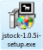
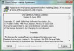

中文
中文 English
English安装与升级
如何在 Windows 上安装 JStock？
- 前往下载，并点击 Windows 图标。
- 下载及把安装程序保存到桌面。下载后，将有一个图标在您的桌面。 
- 双击安装程序。以下的屏幕会显示出来。 点击"我同意"，若您同意这个：GNU General Public License, Version 2. 
- 默认屏幕提示目录 C:\Program Files\JStock 会被显示.您不需更改建议的目录。只需点击"安装"。

- 安装将开始。当安装完成，下面的屏幕会显示出来。点击"关闭".

- 前往 Start Menu-> All Programs-> JStock-> JStock 启动 JStock 软件
如何在 Linux 上安装 JStock？
user@ubuntu804desktop:~$ cd ~
user@ubuntu804desktop:~$ wget https://github.com/yccheok/jstock/releases/download/release_1-0-7-24/jstock-1.0.7.24-bin.zip
user@ubuntu804desktop:~$ unzip jstock-1.0.7.24-bin.zip
user@ubuntu804desktop:~$ cd jstock/
user@ubuntu804desktop:~/jstock$ chmod 755 jstock.sh
user@ubuntu804desktop:~/jstock$ ./jstock.sh
如果您收到错误信息 "Warning: /bin/java does not exist", 您需要在您的 Linux 上安装 Java。例如，以下是如何在 Ubuntu 安装 Java 的谷歌搜索结果。
如何在 Mac 上安装 JStock？
install-jstock-on-mac.pdf (由 Roman Kluka 贡献)
如何在 Windows 上升级到最新的 JStock？
除非在下载网页下的黄色讯息框提到，JStock 是被设计为向后兼容的。升级后，您以前的个人资料将保持不变。只需按照 Windows 安装步骤进行升级，并不需要执行卸载。
如果您想在升级之前备份，我们非常鼓励您使用云存储。不过，如果把个人资料存储在由谷歌所提供的服务器让您觉得不舒服，这里是另一项选择。您可以复制以下的整个文件夹到您的拇指驱动器（或任何其他存储设备）。
如果您需要恢复个人资料，您只需要把备份文件复制到以上所提到的位置。
- Windows XP - C:\Documents and Settings\{Your Name}\.jstock\
- Windows Vista - C:\Users\{Your Name}\.jstock\
如何在 Linux 上升级到最新的 JStock？
除非在下载网页下的黄色讯息框提到，JStock 是被设计为向后兼容的。升级后，您以前的个人资料将保持不变。只需按照 Linux 安装步骤进行升级，并不需要执行卸载。
如果您想在升级之前备份，我们非常鼓励您使用云存储。不过，如果把个人资料存储在由谷歌所提供的服务器让您觉得不舒服，这里是另一项选择。您可以复制以下的整个文件夹到您的拇指驱动器（或任何其他存储设备）。
如果您需要恢复个人资料，您只需要把备份文件复制到以上所提到的位置。
- Linux - ~/.jstock/
如何在 Mac 上升级到最新的 JStock？
install-jstock-on-mac.pdf (由 Roman Kluka 贡献)
如何在 Windows 上卸载 JStock？
前往 Start Menu-> All Programs-> JStock-> Uninstall JStock 以卸载 JStock。
如何在 Linux 上卸载 JStock？
user@ubuntu804desktop:~$ cd ~
user@ubuntu804desktop:~$ rm -r jstock/
user@ubuntu804desktop:~$ rm -r .jstock/
如何在 Mac 上卸载 JStock？
install-jstock-on-mac.pdf (由 Roman Kluka 贡献)